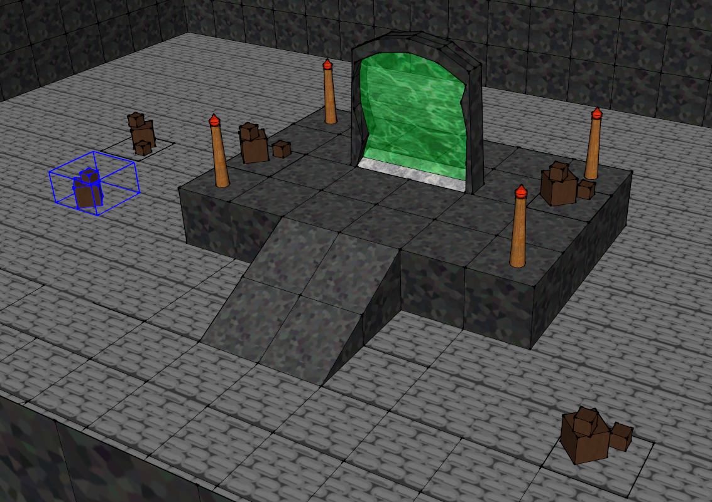
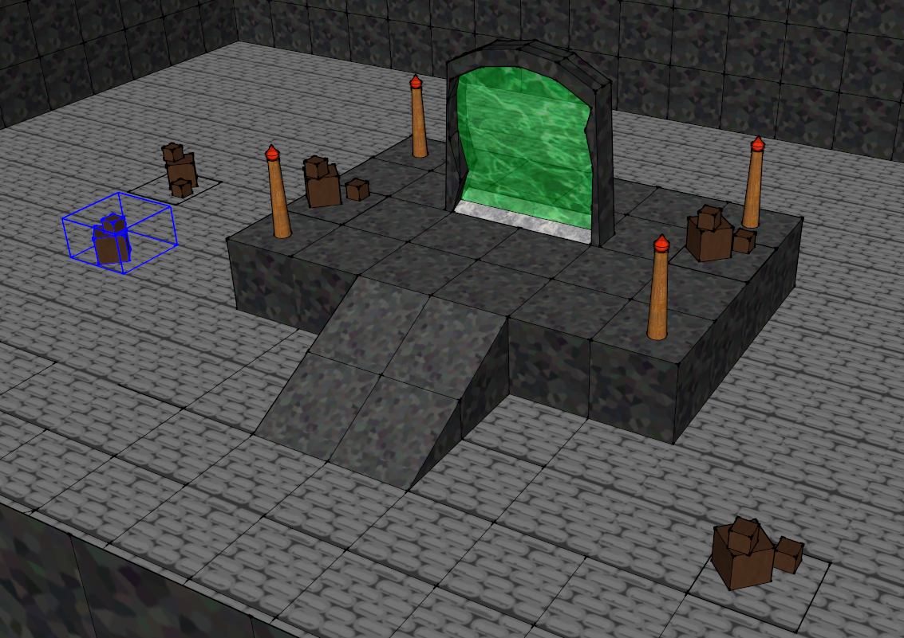
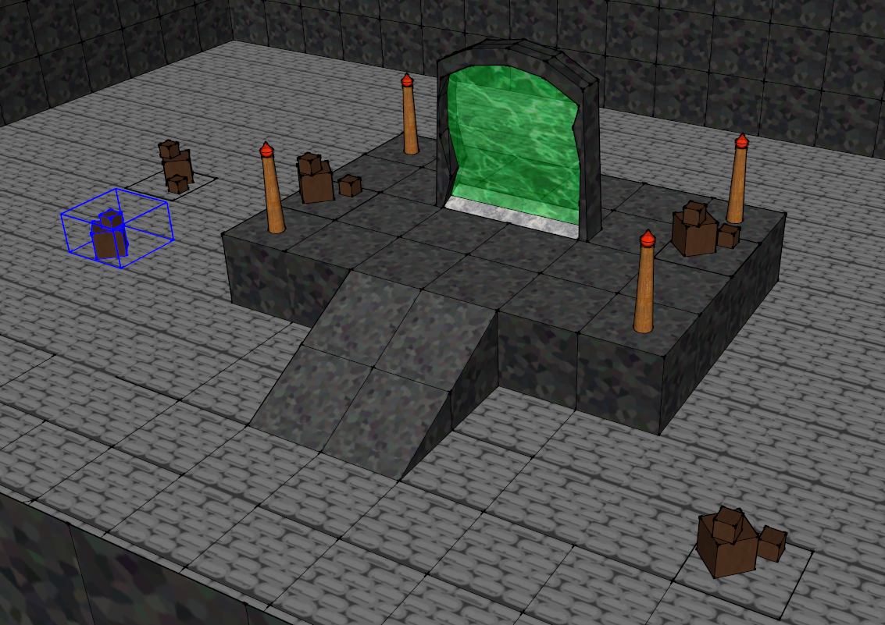

Overview
The Castle at feybreach contains a portal that goes to the cave at Jaroarfor and a similar outpost in the Fey. The lion's share of Tychicus's military might trains and is stationed here.
 

The castle Feybreach has roads to:
The Castle at feybreach contains a portal that goes to the cave at Jaroarfor and a similar outpost in the Fey. The lion's share of Tychicus's military might trains and is stationed here.

The castle Feybreach has roads to: